公有云：(2)公有云应用上云实操案例
案例描述
本案例是讲述如何用华为云公有云平台上部署Prometheus+Grafana数据监控应用的实操案例。
规划节点
节点规划见表1。
表1 节点规划
| IP | 主机名 | 节点 |
|---|---|---|
| 192.168.200.12 | K8s-chinaskill-controller | K8s集群控制节点 |
基础准备
准备一个华为云公有云平台账号，并充值部分金额，在华为云公有云平台上购买一个kubernetes集群服务。
案例实施
申请公有云K8S集群
（1）登录华为云
登录华为云网站，进入“控制台”，选择“服务列表”-“容器”-“云容器引擎”服务。进入服务首页后选择购买“云容器引擎CCE”服务。如图1所示。
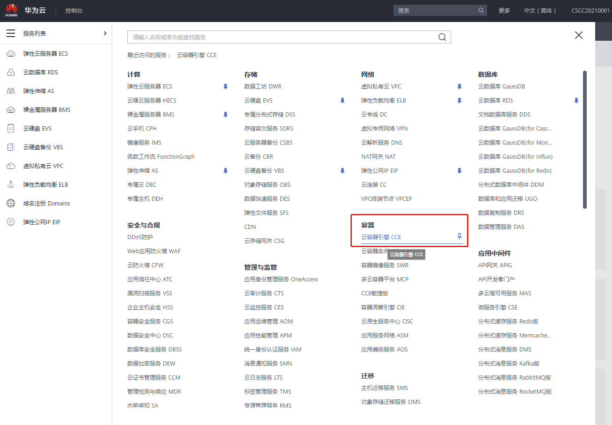
图1 云容器引擎CCE
在跳转页面单击CCE集群下的”创建“按钮。
（2）购买CCE
购买“云容器引擎CCE”服务，选择按需计费，集群名称为k8s-chinaskill，集群规格为单控制节点的cce.s1.small，集群版本为v1.21，如图2所示。
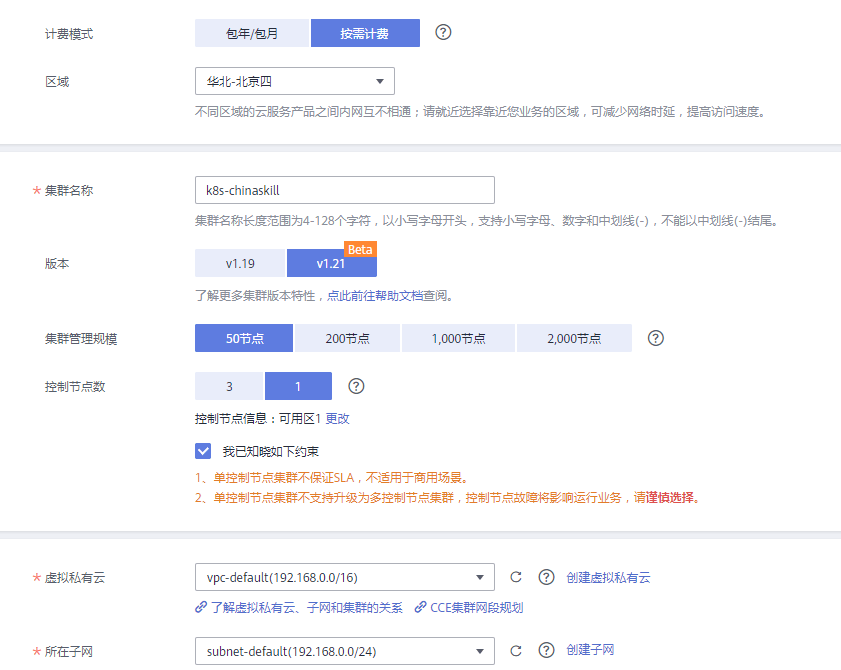
图2 购买集群参数
虚拟机节点名称为k8s-chinaskill-controller，节点规格选择s6.xlarge.2 4核 | 8GB，操作系统选择CentOS 7.6，如图3所示。下滑页面，密码设为Abc@1234，其他默认，单击“下一步：配置确认”按钮。然后选择默认插件（必装系统资源插件），确认配置，勾选”我已知晓上述限制“，单击”提交“按钮，完成服务购买。
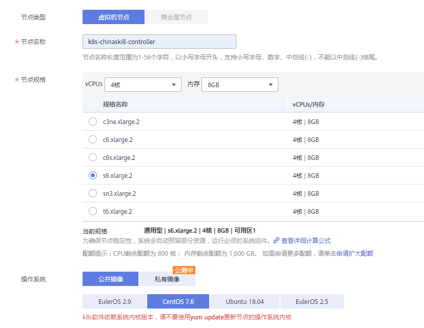
图3 购买集群控制节点参数
（3）集群控制节点绑定外网
为CCE容器节点虚拟机绑定弹性公网。选择“服务列表”-“计算”-“弹性云服务器ECS”服务，找到上一步创建的k8s-chinaskill-controller云服务器，选择更多，点击“网络设置==》绑定弹性公网IP”。如果有空闲的弹性公网IP，直接选择并绑定；如果没有，就按照弹窗提示购买新的弹性公网IP，之后重新进入弹性云服务器ECS”服务首页，为该云主机绑定弹性公网IP。如图4、图5、图6所示。
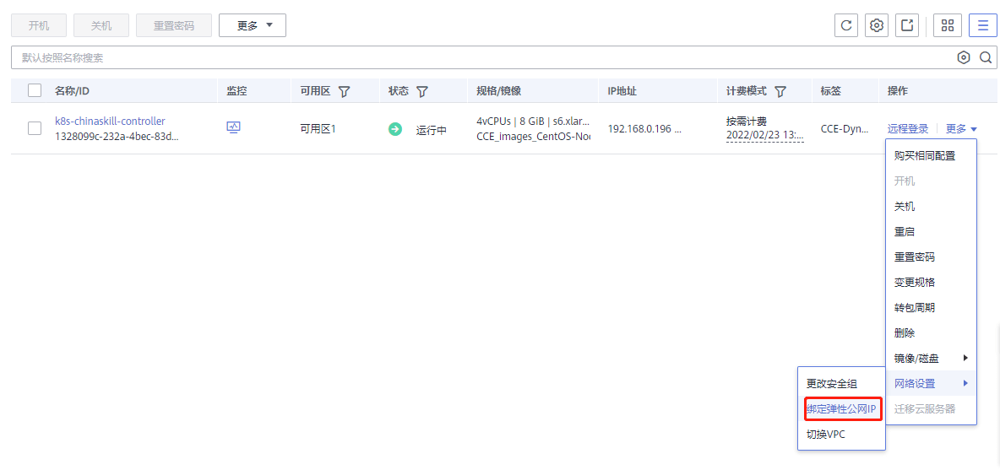
图4 绑定弹性公网1
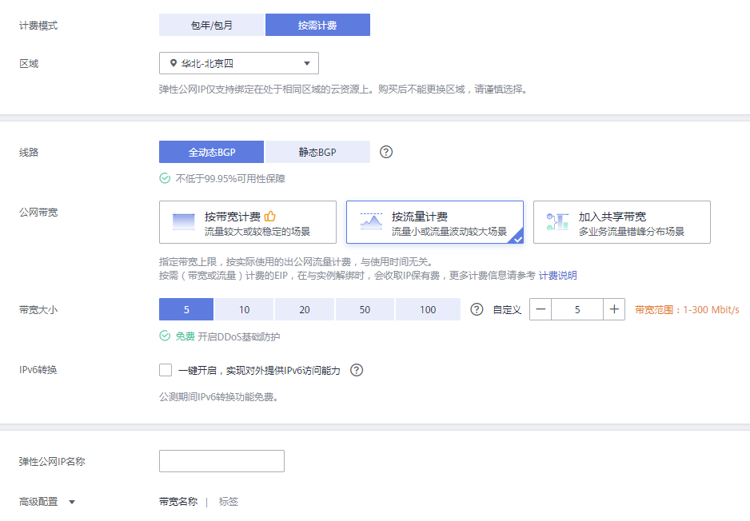
图5 购买弹性公网
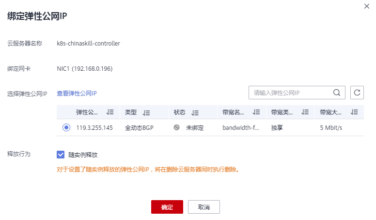
图6 绑定弹性公网2
复制云服务器的弹性公网IP地址119.3.255.145，可以使用CRT连接工具连接到k8s-chinaskill-controller节点，用户名为root，密码为购买服务时配置的密码。（如果连接失败，可以检查一下该云服务器的安全组规则，并修改为开放所有端口。）
（4）部署kubectl工具
选择“服务列表”-“计算”-“云容器引擎CCE”服务，点击菜单栏中的“资源管理”-“集群管理”，可以对购买的CCE集群服务进行管理；这里我们点击k8s-chinaskill集群命令行工具中的kubectl按钮。如图7所示。
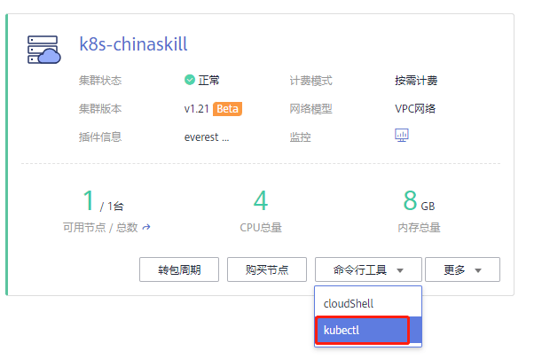
图7 kubectl
在新打开的页面中可以看到集群部署kubectl工具的步骤。如图8所示。
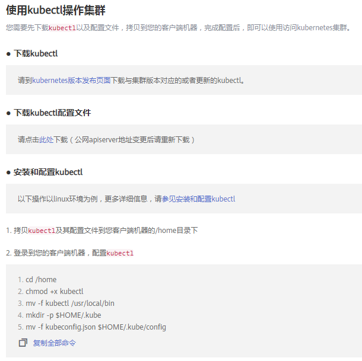
图8 部署kubectl工具
点击图8中的“此处”连接，将kubectl的配置文件kubeconfig.json下载下来。
使用CRT等SSH连接工具，通过上面绑定的弹性公网IP地址访问CCE集群的控制节点，将刚刚下载下来的配置文件kubeconfig.json上传到该节点中，并执行 mkdir -p $HOME/.kube 与 mv -f kubeconfig.json $HOME/.kube/config 这两个步骤，就完成kubectl工具的部署了。
kubectl工具部署完成后，执行kubectl cluster-info命令查看集群信息。
1 | [root@k8s-chinaskill-controller ~]# mkdir -p $HOME/.kube |
安装prometheus插件
（1）安装插件
进入“云容器引擎”服务，点击“插件管理”，在插件市场中找到prometheus监控插件，点击“安装插件”按钮。如图9所示。
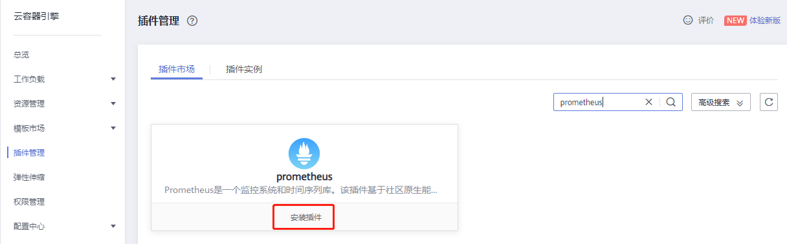
图9 安装插件
选择k8s-chinaskill集群，点击下一步，全部默认规格配置，点击安装。如图10所示。
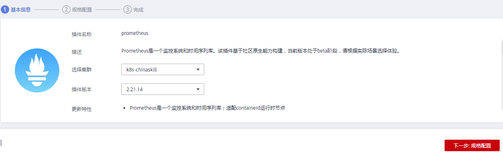
图10 选择k8s-chinaskill集群
安装完成后，点击“查看插件详情”，在“插件实例详情”中，等待prometheus监控插件所有资源全部显示运行中就可以了，如图11所示。
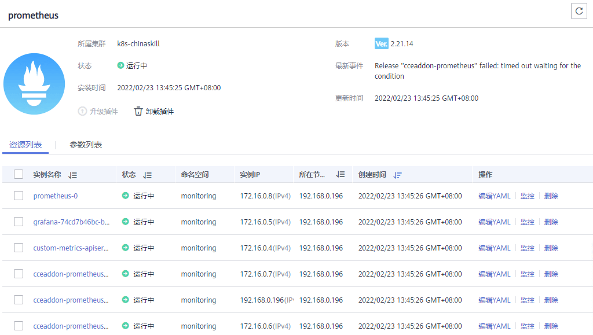
图11 prometheus插件运行
（2）新建prometheus的公网LoadBalancer类型service。
在“云容器引擎”服务中，进入“资源管理”下的“网络管理”，点击“添加Service”按钮，选择“负载均衡”服务。如图12所示。
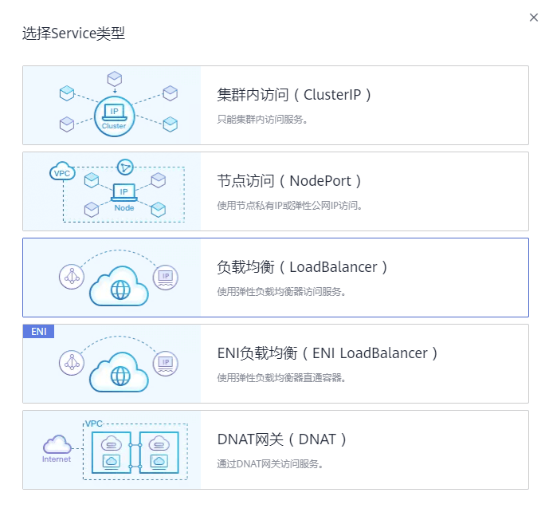
图12 使用负载均衡访问服务
设置prometheus-lbl的service配置，访问类型为“负载均衡”，service名称为prometheus-lbl（不能重复使用相同的service名字）；选择k8s-chinaskill集群，选择monitoring命名空间，关联prometheus工作负载；配置容器端口为9090，访问端口为9090；其他全部选择默认选项。如图13、图14、图15所示。
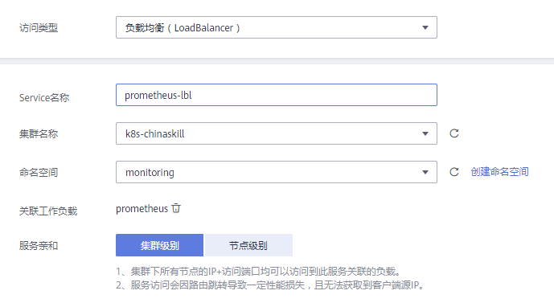
图13 prometheus-lbl的service配置1
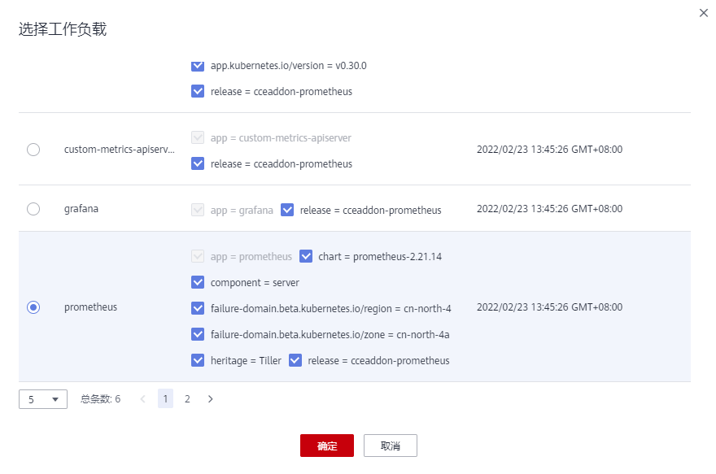
图14 prometheus-lbl的service配置2
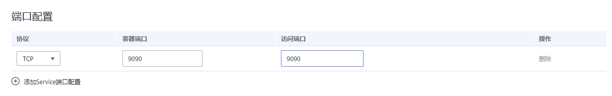
图15 prometheus-lbl的service配置3
购买的service服务创建完成后，可以在网络管理中看到创建的prometheus-lbl服务。如图16所示。
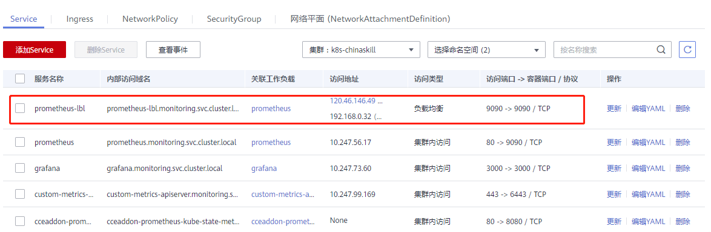
图16 prometheus-lbl服务
（3）新建grafana的公网LoadBalancer类型service
在“云容器引擎”服务中，进入“资源管理”下的“网络管理”，点击“添加Service”按钮，选择“负载均衡”服务。
设置grafana-lbl的service配置，访问类型为“负载均衡”，service名称为grafana-lbl（不能重复使用相同的service名字）；选择k8s-chinaskill集群，选择monitoring命名空间，关联grafana工作负载；负载均衡设置选择上一步中已经创建的负载均衡服务“cce-lb-*”；配置容器端口为3000，访问端口为3000；其他全部选择默认选项。如图17、图18、图19、图20所示。
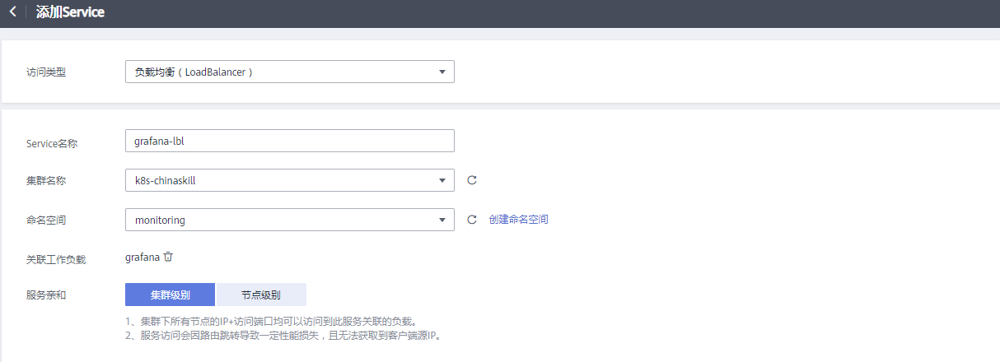
图17 grafana-lbl的service配置1
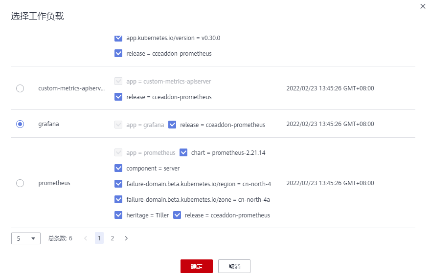
图18 grafana-lbl的service配置2
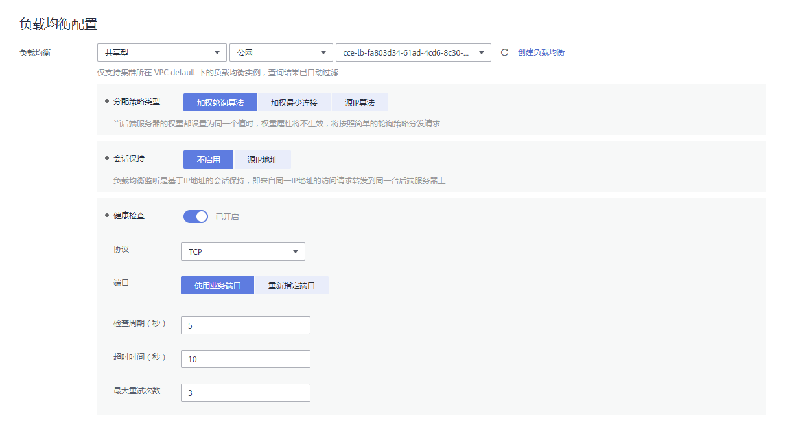
图19 grafana-lbl的service配置3
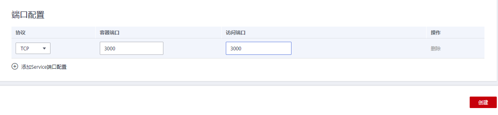
图20 grafana-lbl的service配置4
购买的service服务创建完成后，可以在网络管理中看到创建的grafana-lbl服务。如图21所示。
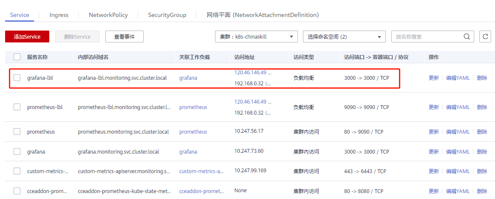
图21 grafana-lbl服务
（4）访问监控服务
通过图16和图21中两个lbl服务的外网访问路径120.46.146.49:9090、120.46.146.49:3000分别访问prometheus监控服务和grafana数据图表服务页面。如图22、图23所示。
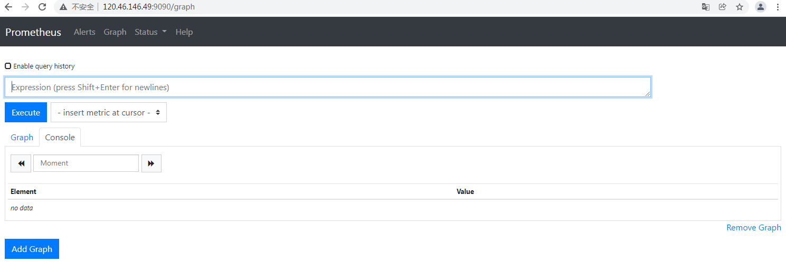
图22 prometheus监控服务首页
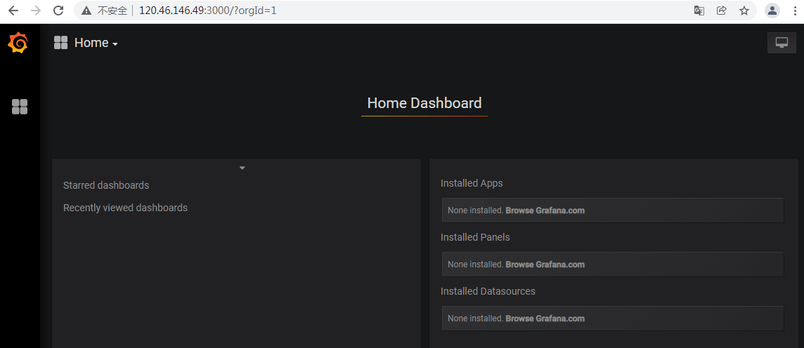
图23 grafana数据图表服务首页
（5）查看k8s-chinaskill集群监控状态
由于是使用CCE集群的插件模式安装prometheus服务，所以prometheus监控服务已经自动部署了对宿主集群k8s-chinaskill的监控。
进入prometheus监控服务首页，查看Status –>targets服务，可以看到对集群k8s-chinaskill的监控端口。如图24所示。
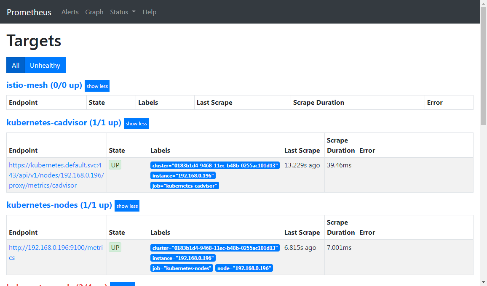
图24 targets服务
进入grafana服务首页，点击右上角的Home按钮，选择1-kubernetes-deployment-statefulset-daemonset-metrics的dashboard数据图表，可以看到对集群k8s-chinaskill的数据图表解析。如图25所示。
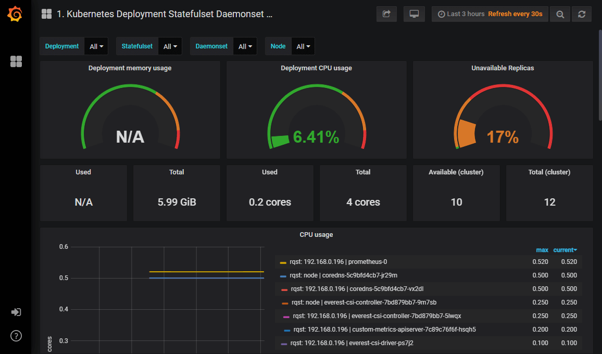
图25 1-kubernetes-deployment-statefulset-daemonset-metrics
添加对CCE集群中Nginx 容器服务监控
（1）创建可监控的Nginx 容器
CRT连接到k8s-chinaskill集群的控制节点，并使用kubectl工具部署Nginx服务，并添加prometheus的监控数据采集接口。
1 | [root@k8s-chinaskill-controller ~]# docker pull nginx:1.21.5-alpine |
（2）查看prometheus监控
由于是使用容器创建的Nginx服务，所以进入prometheus监控targets服务中，我们就可以在Kubenetes-pod中看到对Nginx的服务器监控。如图26所示。
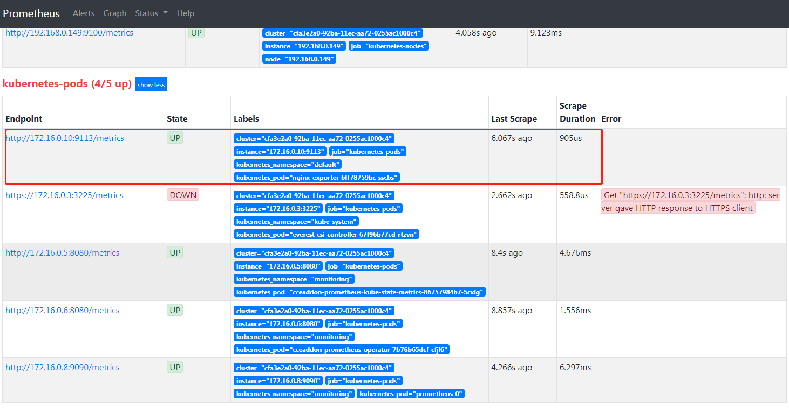
图26 Nginx服务监控